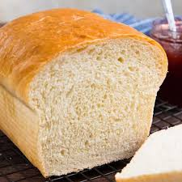
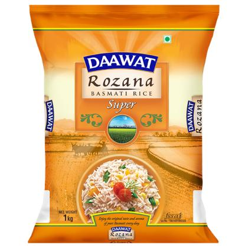
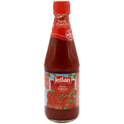
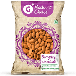
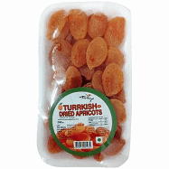
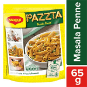
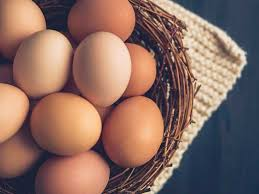
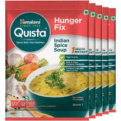

| Name |
Product |
Description |
| Bread |
 |
Bread is a staple food prepared from a dough of flour and water, usually by baking. Throughout
recorded history it has been a prominent food in large parts of the world; it is one of the oldest
man-made |
| Rice |
 |
Rice is the seed of the grass species Oryza glaberrima or Oryza sativa. As a cereal grain, it is the
most widely consumed staple food for a large part of the world's human population, especially in
Asia and Africa. It is the agricultural commodity with the third-highest worldwide production, after
sugarcane and maize |
| Sauces |
 |
In cooking, a sauce is a liquid, cream, or semi-solid food, served on or used in preparing other
foods. Most sauces are not normally consumed by themselves; they add flavor, moisture, and visual
appeal to a dish. Sauce is a French word taken from the Latin salsa, meaning salted. |
| Oils |
|
An oil is any nonpolar chemical substance that is a viscous liquid at ambient temperatures and is
both hydrophobic and lipophilic. Oils have a high carbon and hydrogen content and are usually
flammable and surface active. Most oils are unsaturated lipids that are liquid at room temperature.
|
| almonds |
 |
The almond is a species of tree native to Iran and surrounding countries but widely cultivated
elsewhere. The almond is also the name of the edible and widely cultivated seed of this tree. |
| Dried fruit |
 |
Dried fruit is fruit from which the majority of the original water content has been removed either
naturally, through sun drying, or through the use of specialized dryers or dehydrators. |
| Pasta |
 |
Pasta is the Italian designation or name given to a type of starchy noodle or dumpling food or dish
typically made from grain flour, commonly wheat, mixed into a paste or dough, usually with water or
eggs, and formed or cut into sheets or other shapes. It is usually cooked by boiling, baking or
frying. |
| Eggs |
 |
Eggs are laid by female animals of many different species, including birds, reptiles, amphibians, a
few mammals, and fish, and many of these have been eaten by humans for thousands of years. Bird and
reptile eggs consist of a protective eggshell, albumen, and vitellus, contained within various thin
membranes. |
| Cheese |
 |
Cheese is a dairy product, derived from milk and produced in wide ranges of flavours, textures and
forms by coagulation of the milk protein casein. It comprises proteins and fat from milk, usually
the milk of cows, buffalo, goats, or sheep. |
| Soups |
 |
Soup is a primarily liquid food, generally served warm or hot (but may be cool or cold), that is
made by combining ingredients of meat or vegetables with stock, or water. Hot soups are additionally
characterized by boiling solid ingredients in liquids in a pot until the flavors are extracted,
forming a broth. |